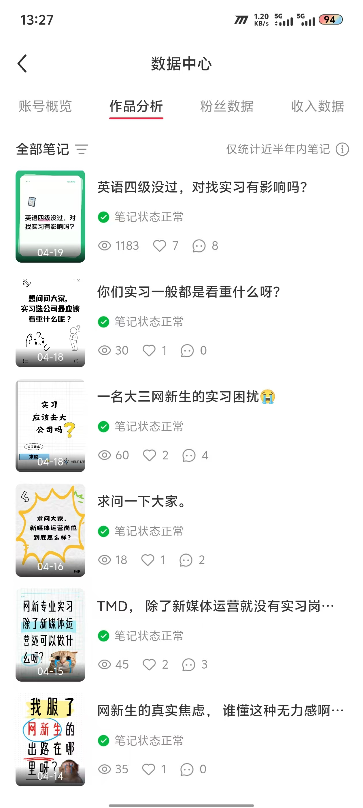
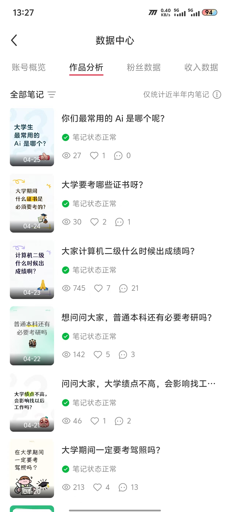

Scroll
About Me
基本信息
教育背景
内江师范学院 · 网络与新媒体专业
2023.09 - 至今 · 本科在读
主修课程涵盖新媒体内容生产、网络传播学、数据新闻、电子商务分析、基础数据分析（SPSS）等核心课程。 在校期间系统自学新媒体运营体系，掌握内容策划、数据分析、平台运营等核心技能。
专业技能
数据分析
Excel 数据透视
VLOOKUP
数据可视化
运营指标体系
A/B 测试
AARRR 增长模型
内容创作
小红书图文策划
爆款标题写作
Canva 封面设计
短视频脚本
内容日历排期
AI 工具应用
DeepSeek（接入VS Code）
NotebookLM
ChatGPT
Claude
Kimi
扣子空间
AI辅助内容创作
工具技能
Premiere Pro
剪映
Canva
秀米
Excel
Projects
实践项目
20+
累计发布笔记
1,390
单篇最高浏览
21
单篇最高分享
3
AI项目落地
个人小红书账号运营
求职成长类账号 · 独立运营
- 独立从0到1起号，完成账号定位、选题策略、封面设计、文案撰写、标签优化全流程，共产出 20+ 篇笔记
- 追热点选题+情绪共鸣方法论：围绕大学生焦虑话题创作，成功验证高互动内容模型
- 产出2篇爆款笔记：「实习薪资2000正常吗？」浏览量1,390（分享21次）、「英语四级没过对找实习有影响吗」浏览量1,183（评论7条）
- 建立数据复盘SOP：每篇笔记后进行浏览-互动-转化漏斗分析，持续迭代选题方向和封面设计策略
抖音短视频内容分析与创作
音乐剪辑类账号 · 独立完成内容选题与视频制作
- 独立完成抖音短视频的选题策划、素材剪辑、音乐选取、发布优化全流程
- 通过分析音乐类内容的受众偏好与平台推荐机制，实践短视频内容从创意到落地的完整链路
- 积累了对短视频平台内容分发逻辑和用户互动规律的实操认知
AI赋能论文写作
使用 NotebookLM 进行文献分析与论文写作辅助
- 利用NotebookLM 自由定制知识库，上传多篇参考文献进行分析，辅助完成论文选题报告和摘要绪论撰写
- 将 DeepSeek 接入 VS Code，AI 驱动论文结构化写作与内容优化迭代，实现 AI 深度嵌入学习工作流
- 体现AI工具链整合能力：NotebookLM + DeepSeek + VS Code 协同，从文献梳理到论文输出全链路 AI 提效
Portfolio
个人作品

📊 小红书作品数据 ①
笔记数据表现分析，含浏览、互动、转化数据

📊 小红书作品数据 ②
多篇笔记横向对比，内容优化策略数据支撑
📈
📕
🎬 剪辑作品
视频剪辑作品展示，使用 Premiere Pro / 剪映 制作
AI Creations
AI创作
熟练运用 DeepSeek、NotebookLM、Claude、ChatGPT、Kimi 等前沿 AI 工具进行内容创作、数据分析与工作流优化。 将 DeepSeek 接入 VS Code 实现 AI 驱动编码，用 NotebookLM 构建个人知识库辅助论文写作，通过 AI 深度嵌入工作流，大幅提升产出效率与创作质量。
🤖 DeepSeek+VS Code
📚 NotebookLM
💬 Claude
🧠 ChatGPT
🌈 Grok
🔮 Kimi
⚙️ 扣子空间
🤖 AI 创作视频作品
使用 AI 工具辅助创作的视频内容展示
About Me
关于我
不仅会用AI，更懂如何将AI嵌入工作流。将DeepSeek接入VS Code， 实现AI驱动的编码与内容生产；用NotebookLM自由定制AI知识库，进行文献分析与论文写作辅助。 坚信AI的深度融入能大幅提高产出效率与质量，致力于成为AI时代背景下真正有竞争力的新人才。